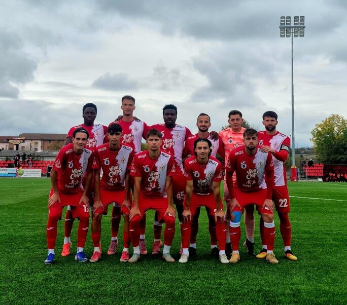

CS Bihorul Beiuș
Clubul Sportiv Bihorul Beiuș este unul dintre simbolurile fotbalului din Depresiunea Beiușului, având o tradiție de peste un secol.
Povestea fotbalului la Beiuș a început pe 7 iulie 1921, când, la inițiativa profesorului Ioan Bușiția, a fost înființată echipa de fotbal Aurora Beiuș. De-a lungul anilor, formația a evoluat sub diverse denumiri, printre care Aurora, Gloria și Bihorul Beiuș.
Unul dintre cele mai importante momente din istoria clubului a fost participarea în Liga a III-a, unde echipa a activat timp de opt sezoane consecutive, între anii 2004 și 2012. În sezonul 2011–2012, Bihorul Beiuș a obținut locul al treilea, una dintre cele mai mari performanțe din istoria sa.
Clubul a continuat să reprezinte cu mândrie orașul Beiuș, câștigând Cupa României – faza județeană Bihor, în anii 2015 și 2024.
Sezonul 2024–2025 a adus o altă realizare remarcabilă: câștigarea Ligii a IV-a Bihor și promovarea în Liga a III-a, după victoria în fața echipei Sticla Arieșul Turda în ambele manșe ale barajului de promovare. În prezent, CS Bihorul Beiuș evoluează în Liga a III-a, al treilea eșalon al fotbalului românesc.
Clasament
Hartă interactivă

CS Bihorul Beiuș - Minaur Baia Mare
Stadion
Galerie